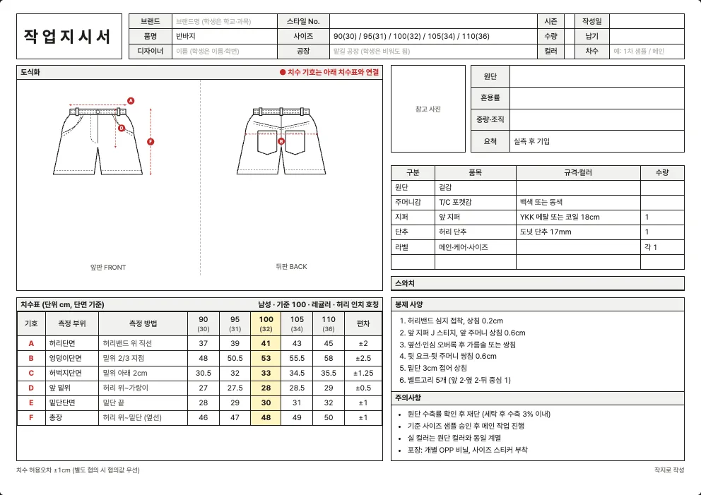

최종 수정 2026년 10월 10일 · 읽는 시간 약 4분
반바지 양식 내려받기
반바지와 버뮤다 팬츠에 쓰는 엑셀 작업지시서 양식입니다. 바지와 같은 치수 항목을 쓰되 총장이 짧은 옷에 맞춘 기준값이 들어 있습니다. 남성 사이즈에는 허리 인치 호칭도 함께 적혀 있습니다.
| 사이즈 체계 | 엑셀 파일 (.xlsx) |
|---|---|
| 남성 사이즈 (80~110) 허리 인치 호칭 함께 표기 | 남성 사이즈 (80~110) |
| 여성 사이즈 (44~88) 허리 인치 호칭 함께 표기 | 여성 사이즈 (44~88) |
| 영문 양식 (해외 공장용) | 남성 · 영문 여성 · 영문 |

반바지 작업지시서에서 꼭 챙길 것
- 총장 기준점: 반바지는 총장이 짧아 허리선부터 밑단까지 몇 cm인지가 곧 길이감입니다. 기준점(허리선 위, 허리밴드 위 등)을 도식화에 표시해 샘플 때 오해가 없게 하세요.
- 허벅지·밑단 비율: 길이가 짧으면 밑단이 넓게 보이기 쉬워서 허벅지단면과 밑단단면의 차이가 실루엣을 좌우합니다. 두 치수는 함께 정하세요.
- 허리 고무줄·끈: 고무줄이나 드로코드를 쓰면 허리단면을 늘이지 않은 상태로 적고, 고무줄 폭과 끈 길이를 부자재 표에 적습니다.
- 원단 선택: 린넨, 면 트윌, 나일론 태슬란 등 여름 원단을 많이 쓰고, 원단에 따라 수축률과 구김 정도가 다릅니다. 린넨은 수축과 구김이 크므로 주의사항에 가공 방식을 적어 두세요.
- 주머니 깊이: 짧은 바지는 주머니 깊이가 깊으면 안감이 밑단 밖으로 보이거나 소지품이 비칠 수 있습니다. 주머니 크기와 위치를 같이 적습니다.
치수표 (양식에 들어 있는 기준값)
이 양식의 치수표는 6곳(허리단면, 엉덩이단면, 허벅지단면, 앞 밑위, 밑단단면, 총장)입니다. 기준(샘플) 사이즈는 100(남성)과 66(여성)이고, 단위는 cm이며 단면(납작하게 놓고 가로로 잰 길이) 기준입니다. 허리 인치 호칭은 허리단면×2÷2.54에 맞춘 참고값입니다.
남성 사이즈 (80~110)
| 기호 | 측정 부위 | 측정 방법 | 90(30) | 95(31) | 100(32) | 105(34) | 110(36) | 편차 |
|---|---|---|---|---|---|---|---|---|
| A | 허리단면 | 허리밴드 위 직선 | 37 | 39 | 41 | 43 | 45 | ±2 |
| B | 엉덩이단면 | 밑위 2/3 지점 | 48 | 50.5 | 53 | 55.5 | 58 | ±2.5 |
| C | 허벅지단면 | 밑위 아래 2cm | 30.5 | 32 | 33 | 34.5 | 35.5 | ±1.25 |
| D | 앞 밑위 | 허리 위~가랑이 | 27 | 27.5 | 28 | 28.5 | 29 | ±0.5 |
| E | 밑단단면 | 밑단 끝 | 28 | 29 | 30 | 31 | 32 | ±1 |
| F | 총장 | 허리 위~밑단 (옆선) | 46 | 47 | 48 | 49 | 50 | ±1 |
여성 사이즈 (44~88)
| 기호 | 측정 부위 | 측정 방법 | 44(24) | 55(26) | 66(28) | 77(30) | 88(32) | 편차 |
|---|---|---|---|---|---|---|---|---|
| A | 허리단면 | 허리밴드 위 직선 | 30 | 32.5 | 35 | 37.5 | 40 | ±2.5 |
| B | 엉덩이단면 | 밑위 2/3 지점 | 44 | 46.5 | 49 | 51.5 | 54 | ±2.5 |
| C | 허벅지단면 | 밑위 아래 2cm | 27.5 | 29 | 30 | 31.5 | 32.5 | ±1.25 |
| D | 앞 밑위 | 허리 위~가랑이 | 25 | 25.5 | 26 | 26.5 | 27 | ±0.5 |
| E | 밑단단면 | 밑단 끝 | 26 | 27 | 28 | 29 | 30 | ±1 |
| F | 총장 | 허리 위~밑단 (옆선) | 38 | 39 | 40 | 41 | 42 | ±1 |
‘측정 방법’ 칸은 어디에서 어디까지 재는지를 적은 것입니다. 공장과 재는 방법이 다르면 같은 숫자도 다른 옷이 됩니다. 일반적인 측정 위치는 치수 재는 법에 정리했습니다.
기본 부자재와 봉제 사양
| 부자재 | 기본 규격(예시) |
|---|---|
| 겉감 | — |
| T/C 포켓감 | 백색 또는 동색 |
| 앞 지퍼 | YKK 메탈 또는 코일 18cm |
| 허리 단추 | 도넛 단추 17mm |
| 메인·케어·사이즈 | — |
양식에는 아래 봉제 사양이 예시로 들어 있습니다. 내 옷에 맞게 고쳐 쓰세요.
- 허리밴드 심지 접착, 상침 0.2cm
- 앞 지퍼 J 스티치, 앞 주머니 상침 0.6cm
- 옆선·인심 오버록 후 가름솔 또는 쌍침
- 뒷 요크·뒷 주머니 쌍침 0.6cm
- 밑단 3cm 접어 상침
- 벨트고리 5개 (앞 2·옆 2·뒤 중심 1)
원단 예시
반바지에 많이 쓰는 원단입니다.
| 원단 | 혼용률(예시) | 중량·조직(예시) |
|---|---|---|
| 쭈리 (프렌치테리) | 면 100% | 300~340g/㎡ 쭈리 |
| 린넨 | 린넨 100% | 평직 (세탁 수축 주의) |
| 데님 12oz | 면 100% | 12oz 3/1 트윌 |
| 면 트윌 (치노) | 면 97% / 폴리우레탄 3% | 260g/㎡ 2/1 트윌 |
| 나일론 태슬란 | 나일론 100% | 태슬란, 발수 가공 |
| 폴리 스판 (기능성) | 폴리에스터 90% / 폴리우레탄 10% | 180g/㎡ 기능성 저지 |
실제 혼용률과 중량은 구입한 원단의 스와치 라벨이나 공급처 자료로 확인해서 적어야 합니다. 원단 선택은 원단 고르는 법, 요척과 원가는 요척과 원가 계산을 참고하세요.
엑셀 양식과 작지 도구
엑셀 양식은 직접 쓰기 편하지만, 반바지의 소분류(반바지·버뮤다 팬츠)와 디테일에 맞는 도식화를 바꾸려면 그림을 직접 편집해야 합니다. 작지 도구에서는 소분류와 디테일을 고르면 도식화와 치수표가 자동으로 채워지고, ‘엑셀로 저장’으로 내 옷 기준의 엑셀을 받을 수 있습니다.
자주 묻는 질문
반바지 작업지시서에는 어떤 치수를 적나요?
6곳(허리단면, 엉덩이단면, 허벅지단면, 앞 밑위, 밑단단면, 총장)입니다. 반바지에서는 총장과 밑단단면을 특히 꼼꼼히 확인하세요.
바지 양식으로 반바지를 만들어도 되나요?
치수 항목은 같아서 총장만 짧게 바꾸면 됩니다. 이 반바지 양식은 총장이 짧은 옷에 맞춘 기준값이 이미 들어 있어 따로 줄일 필요가 없습니다.
수영복이나 운동복 반바지에도 쓸 수 있나요?
신축 원단과 안감(속 팬티) 구조는 이 양식에 없으니 추가 원단 줄과 봉제 사양에 직접 적어야 합니다. 기본 틀로는 쓸 수 있습니다.
다른 품목 양식
내 옷에 맞는 도식화까지 한 번에
소분류와 디테일을 고르면 도식화·치수표가 자동으로 채워집니다.